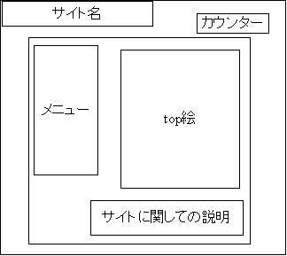
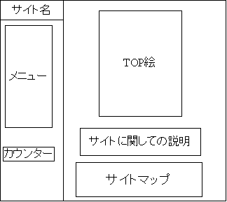
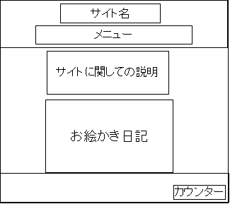
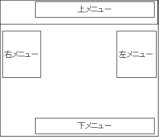
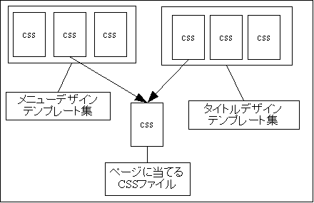

このworkは、クリエイティブ・コモンズ・ライセンスの下でライセンスされています。
先ほどまでで、ページっていうのは、ブログに使う場合や、セミナーを使う場合、リンクの羅列として使う場合などで、種類が限られると言うこと、それにページには同じような設定を書いている場合が多いことを書きました
ここからは、それをふまえた上での次の理論を紹介しましょう
さて、これから、ある３つのサイトのtopページを、役目ごとに分解してみます、軽く流す程度で良いので、ご覧下さい
| CGサイトの実例１ |
|---|
|  |
| CGサイトの実例２ |
|  |
| CGサイトの実例３ |
|  |
今回はCGサイトですが、すべてのサイトは与えられた役目ごとに、すべて四角形の範囲に収まっている事が分かると思います
しかも、その役目ごとにある四角形は、基本的に重なることがない。こうすることが使いやすいページの作り方でもあり、技術的にも無理なく使いやすい方法でもあるから当然の様にこうなるのですが、こういう法則があるのならば、これを上手く使う方法はないでしょうか？
これから解説する方法がそれに当たるものです
さて、貴方がサイトのTOPページを作成するとして、メニューというのはサイトの何処に置きますか？
世界中に無数のWebサイトがありますが、実はほとんど例外なく、その置き場所は決まっています、サイトの上下左右のいずれかです
細かいことを言うなら、メニューは左上に近いほど、置かれる確率が高くなる事、CG系サイトの場合は例外として、TOP絵に対して上下左右のいずれか置かれる場合がある事等が言えますが、今回着目する点は少し違います
先ほどの図で、メニューは上下左右のいずれかに置かれることを説明しましたが、今回は、ここに注目しましょう、さて、もう一度、先ほどの図を見てください
上下方向に置かれるメニューってどうなっていますか？ 横方向のリストですよね？
左右方向に置かれるリストってどうなっていますか？ 縦方向のリストですよね？
そう、スペースの制約上、当たり前の事ですよね、当たり前の事ですが、ほぼ例外の無い法則ですよね？
言い直しましょう、メニューっていうのは、コンテンツへのリンクを表したリストですから、縦方向のリストか横方向のリストにしかならないんです
ここで、話をスタイルシートのデザインパターンに戻す事になるのですが、例えばこんなHTMLソースがあったとします
<ul id="menu" class="menu">
<li>TOP</li>
<li>Gallary</li>
<li>Diary</li>
<li>BBS</li>
<li>mail</li>
<li>Link</li>
</ul>
メニューとして使われる事を考えたソースですが、これを横方向のリストにしたい場合、最低５，６行程度の設定をスタイルシートに書き込まないといけません
しかし、@import文を使用して、デザインパターンを読み込んでみましょう、これでメニューは１行の追加で横方向リストに変わりました
横方向の場合でもfloat型横リストとinline型横リストでもこの作業は同じです、さらに縦方向リンク柱でも例外なくこうなります
つまりサイトは、その役割ごとに分割可能ですが、分割した部品のデザインは大体パターン化して分類できるんですよね
そういうデザイン部品をあらかじめ制作しておいて、必要なときに読み込ませるようにすれば、欲しいデザインを早く作ることが可能だったりするんですよね
banner title型等がそうですが、サイト名にデザインを当てる場合なんかも一定の法則があることを発見しています。他のページ部品も一定のパターンが存在する事が予想できますので、上手く使えば欲しいデザインに、短い時間で近づける事が出来るようになりますよ
